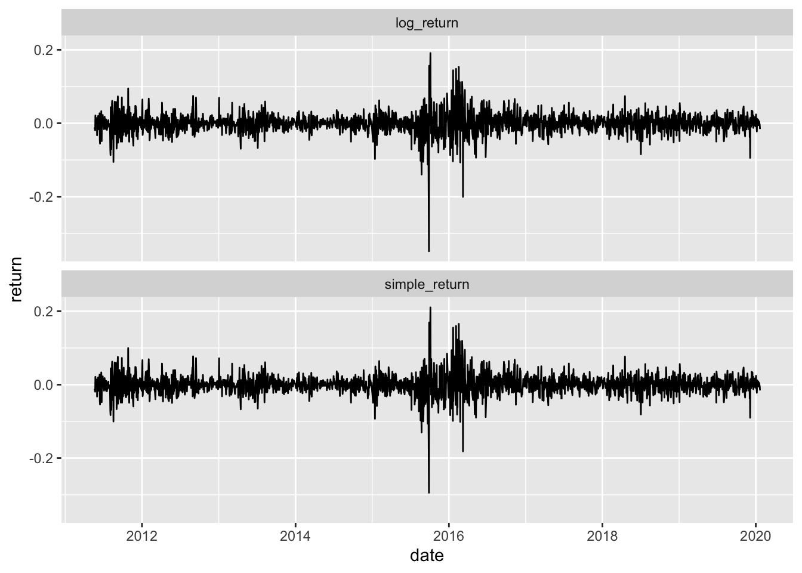

load("fin7028_dat.RData")Warning: namespace 'ggfortify' is not available and has been replaced
by .GlobalEnv when processing object 'y'title: “FIN7028:Financial data stories” author: “Barry Quinn” date: “2024-01-22” format: pdf
load("fin7028_dat.RData")Warning: namespace 'ggfortify' is not available and has been replaced
by .GlobalEnv when processing object 'y'.largeWhat is WRDS?
.blockquote[ Wharton Research Data Services (WRDS) provides the leading business intelligence, data analytics, and research platform to global institutions—enabling historical analysis and insight into the latest innovations in academic research.]
.large[What is LSPD]
.blockquote[ The London Share Price Database (LSPD) is a unique, comprehensive database of UK stock returns covering over 9,000 UK shares from 1955 to date. It is an invaluable resource for both academic researchers and investment practitioners. The LSPD provides a record of total returns to investors, incorporating dividends and capital changes, and includes companies whether they have survived or died. This ensures that research, back testing and performance evaluation focuses on total shareholder return, and is untainted by survivor bias.]
.large[ - Become conversant in building and executing WRDS web queries - Understand survivor bias - Learning how to process financial data
]
WRDS stands for Wharton Research Data Services.
WRDS aggregates data into a standard format and then makes it available to subscribers.
WRDS is best known for financial data—for example, stock prices from CRSP, or company fundamentals from Compustat.
WRDS also hosts data in a variety of other disciplines including:
.fatinline[Accouting, Banking, Management, Economics, Marketing, Healthcare, Insurance]
All you need is a web browser and Internet access to query data from WRDS.
After you decide which dataset to use, you can use the web-based query form to extract and output data in the format of your choice.
What follows provides instructions on how to create a web-based query. See Support for additional ways to access WRDS data.
.blockquote[ ### Reproducible science skill
In future labs and homework exercises we will be using one of the most powerful feature of WRDS; WRDS Cloud, to extract data programmatically.
]
.your-turn[
Firstly create an account on WRDS using your QUB credentials
Wait for lecturer to confirm your account ]
.your-turn[
Iur assignment is to access WRDS and download monthly stock prices for IBM, Amazon, and Walmart for 2020. Stock price data is provided by CRSP.
This assignment has two parts:
Log in to the WRDS platform and locate the CRSP database.
Create a data query in CRSP and view the results.
]

.large[ - Enter your username and password - Click login button]
class:middle
.pull-left-1[ - The WRDS Home page displays your data subscriptions.
Scroll down the page to locate the CRSP dataset.
Click on CRSP. ] .pull-right-2[  ]
]
.pull-left[ - Click on Stock/Security Files - Click on CRSP. ] .pull-right[  ]
]
.pull-left-2[  ] .pull-right-1[ Click on monthly stock file]
] .pull-right-1[ Click on monthly stock file]
.pull-left-1[ - On the query page, the first step is to select the date range for your data.
 ]
].pull-left-1[ - Make sure ticker is selected - Enter the ticker symbols for the companies: IMB AMZN WMT
] .pull-right-2[  ]
]
.pull-left-1[
] .pull-right-2[  ]
]


.pull-left-2[  ] .pull-right-1[
] .pull-right-1[
A summary page opens in a new tab, indicating the status of your query, and containing the link to your results.
Success means your data is ready.
Click the Output files link to access the results of your query
]
.pull-left-1[  ] .pull-right-2[ The monthly stock prices for IBM, Amazon, and Walmart for 2020 are displayed. ]
] .pull-right-2[ The monthly stock prices for IBM, Amazon, and Walmart for 2020 are displayed. ]
.pull-left-2[  ] .pull-right-1[
] .pull-right-1[
If you have a pop-up blocker on your browser, the query page will show a banner indicating the query was submitted.
Click the query number to proceed to the Summary screen, then click the link to access your results.
]
.discussion[ - The most important financial time series are asset prices, exchange rates and interest rates. - Most financial studies involve returns rather than prices. - Campbell et al. (1997) gives two main reasons for using returns: 1. For an average investor, returns of an asset is a complete and scale-free summary of the investment opportunity. 2. Return series are easier to handle than price series because the former have more attractive statistical properties.]
\[ 1+R_t= \frac{P_t}{P_{t-1}} \;or\; P_t=P_{t-1}(1+R_t) \]
\[ R_t= \frac{P_t}{P_{t-1}}-1= \;or\; \frac{P_t-P_{t-1}}{P_{t-1}} \]
class:middle
\[1+R_t[k] = \frac{P_t}{P_{t-k}}=\frac{P_t}{P_{t-1}}\times\frac{P_{t-1}}{P_{t-2}} \times \dots \times \frac{P_{t-k+1}}{P_{t-k}}\] \[=(1+R_t)(1+R_{t-1})\dots(1+R_{t-k+1})\] \[=\prod^{k-1}_{j=0}(1+R_{t-j})\]
\[\text{Annualised}\{R_t[k]\} = \left[\prod^{k-1}_{j=0}(1+R_{t-j})\right]^{1/k}-1\]
class:middle
\[\text{Annualised}\{R_t[k]\} \approx \frac{1}{k}\sum^{k-1}_{j=0}R_{t-j}\]
class:middle
\[ r_t=ln(1+R_t)=ln \left(\frac{P_t}{P_{t-1}} \right)=p_t-p_{t-1} \ \text{where }p_t=ln(P_t) \]
\[r_t[k]=ln(1+R_t[k])=ln[(1+R_t)(1+R_{t-1})\dots(1+R_{t-k+1})]\]
\[=ln(1+R_t)+ln(1+R_{t-1})+\dots +ln(1+R_{t-k+1})\]
\[=r_t+r_{t-1}+\dots+r_{t-k+1}\]
The simple net return of a portfolio consisting of N assets is a weighted average of the simple net returns of the assets involved, where the weight on each asset is the percentage of the portfolio’s value invested in that asset.
Let p be a portfolio that places weights wi on asset i.
Then the simple return of p at time t is:
\[R_{p,t}=\sum_{i=1}^{N}w_iR_{it}\text{ where}\sum w_i=1\]
\[r_{p,t} \approx \sum_{i=1}^{N}w_ir_{it}\]
class:middle
\[R_t= \frac{P_t+D_t}{P_{t-1}}-1 \; , \;r_t=ln(P_t+D_t)-ln(P_{t-1})\]
.pull-left[ * Excess returns of an assets at time t is the difference between the asset’s return and the return on some reference asset. * The reference asset is often taken to be riskless such as a short-term UK government bond returns. * In portfolio performance analysis of actively managed funds a benchmark return is often used. * Queens Student Managed Fund (QSMF) is benchmarked against the FTSE 350 Index.] .pull-right[ * The simple excess return and log excess return of an asset are then defined as:
\[Z_t=R_t-R_{0t}, \; z_t=r_t-r_{0t}\]
class:middle
.pull-left[
.content-box-red[Simple return Vs Log returns]
Registered S3 method overwritten by 'quantmod':
method from
as.zoo.data.frame zoo ── Attaching packages ────────────────────────────────────────────── fpp2 2.5 ──✔ ggplot2 3.4.4 ✔ fma 2.5
✔ forecast 8.21.1 ✔ expsmooth 2.3 ── Attaching core tidyverse packages ──────────────────────── tidyverse 2.0.0 ──
✔ dplyr 1.1.4 ✔ readr 2.1.4
✔ forcats 1.0.0 ✔ stringr 1.5.1
✔ lubridate 1.9.3 ✔ tibble 3.2.1
✔ purrr 1.0.2 ✔ tidyr 1.3.0
── Conflicts ────────────────────────────────────────── tidyverse_conflicts() ──
✖ dplyr::filter() masks stats::filter()
✖ dplyr::lag() masks stats::lag()
ℹ Use the conflicted package (<http://conflicted.r-lib.org/>) to force all conflicts to become errors
] .pull-right[ .discussion[ * Plot shows a time plot of daily simple and log returns of Glencore stock from 2011-05-19 to 2020-01-21. * There are 2180 observations. * From the plots, the behaviour of log returns is very similar to simple returns. * The correlation coefficient between log and simple returns is 0.9997. * This is expected, as when x is close to zero, \(log(1+x) \approx x\) and daily simple returns of Glencore are small in the sampling period.]]
class:middle
R, a change series can easily be obtained by taking the difference of log prices diff(log(price)).class:middle
There exist some large outlying observations
The returns were volatile in certain periods but stable in others. We can thus infer:
Statistically the returns have heavy tails
The returns series is characterised by volatility clustering
class:middle
.pull-left[ ### What is a Bond?
A financial instrument which pays the face value (par value) to its holder at the time of maturity.
Some bonds also pay interest periodically; coupon payments.
Zero-coupons bonds do not pay periodic interest.
Bond yield is the return recieved for holding a bond to maturity. ] .pull-right[ ## Current yield
The percentage return that the annual coupon payment provides the investor
\[ \text{Current Yield}_t = \frac{ \text{Annual Interest paid in dollars}}{\text{Market Price of the Bond}_t} \times 100% \]
\[ \text{Current Yield}_t=\frac{ \text{Annual Interest paid in dollars}}{\text{Market Price of the Bond}_t}^{1/k}-1 \\ \text{where }k\text{ denotes time to maturity in years} \] * The definition shows it is typically time dependent (\(_t\) subscript) and does not include capital gains/losses. ]
\[ P=\frac{C_1}{1+y}+\frac{C_2}{(1+y)^2}+\dots+\frac{C_k+F}{(1+y)^k} \]
\[ \text{Discount yield }=\frac{F-P}{F}\times\frac{360}{\text{Days till maturity}}\times \text{100} \]
class:middle, inverse
|ISSUE| BID |ASK| CHANGE| YIELD| |:–:|::|::|::|::| |12-3-98 |5.08 | 5.06 | -.03|5.26
class:middle
the random variable $y_{t}$ given what we know in ${\cal I}$